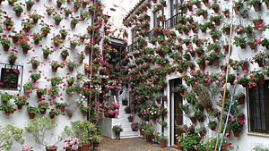
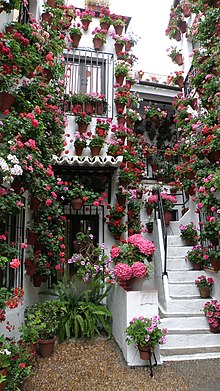
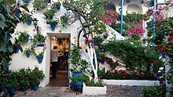

Los Patios

El patio cordobés es un elemento característico de la ciudad andaluza de Córdoba, España, y desde el año 1921 se magnifican con el famoso Festival de los Patios Cordobeses, declarado en 2012 Patrimonio de la Humanidad, cuya visita turística hacen que esta fama crezca en el exterior. En el interior no cabe pensar en una casa que no tenga un patio; lo demás son pisos o chalets
El patio cordobés es un elemento característico de la ciudad andaluza de Córdoba, España, y desde el año 1921 se magnifican con el famoso Festival de los Patios Cordobeses, declarado en 2012 Patrimonio de la Humanidad, cuya visita turística hacen que esta fama crezca en el exterior. En el interior no cabe pensar en una casa que no tenga un patio; lo demás son pisos o chalets
Descripción

Tratando de establecer una tipología, existen patios de planta más o menos cuadrada con arquerías en dos plantas y en los cuatro lados; con arquerías en tres, dos y uno de sus lados. Combinemos esta variedad con plantas altas con galerías de arquería, murales con balcones, adinteladas con madera y barandillas, de balaustres o petos tabicados, con galerías altas de cierres de madera o sin galerías altas. En las galerías bajas los hay sin arcos, con puertas y ventanas, con pilares en lugar de columnas con pies derechos de hierro, fundición, madera o sin soportes, estando empotradas en los muros limítrofes las vigas que cargan las galerías. Hay patios que no tienen galerías y son simplemente limitados por muros en dos o una planta. Los hay alargados, irregulares, encadenados y con cada cara de una clase.
Por otro lado sus suelos son terrizos, empedrados, enlosados de hidráulica, de ladrillo o de mármol. Los hay con arriates y sin ellos, con fuente o pozo, o rara vez sin ninguna de las dos cosas; con árboles o con macetas, y algunos sin plantas, que son rarísimos y que no debían ser considerados.
Hay patios desde el siglo X al XX. La mayoría son particulares o privados; otros colectivos, corrales o casas de vecinos; otros son patios de edificios públicos, palaciegos o conventuales, compases, patios de recibo y hasta plazoletas que parecen patios; hay recintos que siguen siendo patios aunque se llamen cines de verano.
Tratando de establecer una tipología, existen patios de planta más o menos cuadrada con arquerías en dos plantas y en los cuatro lados; con arquerías en tres, dos y uno de sus lados. Combinemos esta variedad con plantas altas con galerías de arquería, murales con balcones, adinteladas con madera y barandillas, de balaustres o petos tabicados, con galerías altas de cierres de madera o sin galerías altas. En las galerías bajas los hay sin arcos, con puertas y ventanas, con pilares en lugar de columnas con pies derechos de hierro, fundición, madera o sin soportes, estando empotradas en los muros limítrofes las vigas que cargan las galerías. Hay patios que no tienen galerías y son simplemente limitados por muros en dos o una planta. Los hay alargados, irregulares, encadenados y con cada cara de una clase.
Por otro lado sus suelos son terrizos, empedrados, enlosados de hidráulica, de ladrillo o de mármol. Los hay con arriates y sin ellos, con fuente o pozo, o rara vez sin ninguna de las dos cosas; con árboles o con macetas, y algunos sin plantas, que son rarísimos y que no debían ser considerados.
Hay patios desde el siglo X al XX. La mayoría son particulares o privados; otros colectivos, corrales o casas de vecinos; otros son patios de edificios públicos, palaciegos o conventuales, compases, patios de recibo y hasta plazoletas que parecen patios; hay recintos que siguen siendo patios aunque se llamen cines de verano.
Festival de los Patios Cordobeses

El Festival de los Patios Cordobeses es un concurso de patios de Córdoba (España) celebrado, generalmente, durante la segunda y tercera semana del mes de mayo. Los participantes decoran y abren sus patios gratuitamente para que puedan ser visitados dentro del horario establecido para tal fin. En los últimos años, los patios en concursos se señalan con macetas de setos que se colocan flanqueando las puertas, de modo que puedan ser identificados de manera clara.
El Festival de los Patios Cordobeses es un concurso de patios de Córdoba (España) celebrado, generalmente, durante la segunda y tercera semana del mes de mayo. Los participantes decoran y abren sus patios gratuitamente para que puedan ser visitados dentro del horario establecido para tal fin. En los últimos años, los patios en concursos se señalan con macetas de setos que se colocan flanqueando las puertas, de modo que puedan ser identificados de manera clara.